Rol de los puertos en el Plan nacional de mejoramiento del sistema Ferroviario argentino
Cap. Ricardo Ferreyra
Sobre finales del año 2012, se le encomendó a la Administración General de Puertos (AGP) la tarea e encontrar una solución logística alternativa y superadora en lo referente a las operaciones de descarga de coches ferroviarios que se realizaban en otras instalaciones portuarias, que hasta ese momento, habían tenido resultados poco satisfactorios en cuanto a las operaciones logísticas en sí y a los costos resultantes de las mismas.
La opción presentada fue realizar las operaciones de descarga de material rodante para el plan de renovación de infraestructura ferroviaria del Estado Nacional, en el muelle de Dársena E Norte, Secciones 1° y 2°.
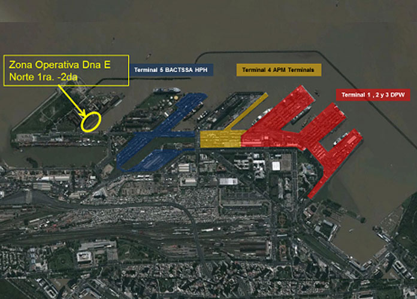
En este sitio operativo del muelle público de Dársena E Norte, se da una condición ideal ya que se encuentra el centro de la vía de trocha ancha (1,676 m), a 5,15 metros del borde de muelle, contándose además con el tercer riel que permitiría la operación en trocha métrica (1,00 m).
La Operativa
Está posición de la vía respecto al muelle, permite descargar con grúas del buque los vagones
directamente desde las bodegas o cubiertas en forma directa sobre vía, con un solo movimiento, logrando
realizar una operación muy eficiente y de bajo costo, para que posteriormente vaya rodando sobre las
vías los coches de pasajeros y vagones de carga a remolque con tracción propia de AGP, moviéndose desde
el muelle de operación hacia las parrillas de maniobra portuaria, donde se almacenan inicialmente en
Empalme 3-5 y/o Empalme Norte, para luego ser retiradas de puerto una vez cumplidos los trámites aduaneros.
Como paso previo, luego de un arduo trabajo del personal de AGP y de cuadrillas ferroviarias de apoyo externas,
en tiempo record y a bajo costo, se lograron poner nuevamente en servicios el trazado ferroviario desde el Muelle
de Dársena E a la Parrilla Empalme Junin y estar listos para recibir el primer buque, el BBC Tennessee, el 1°
de febrero de 2013.
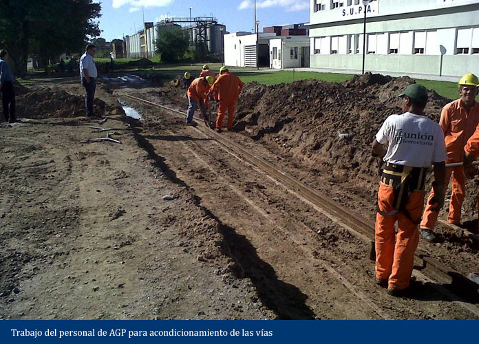
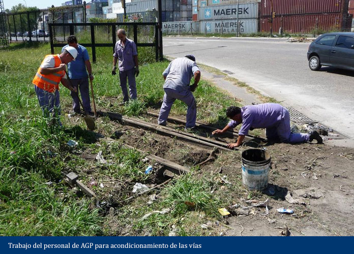
Llegada de los Buques
El 1° de Febrero de 2013 llego al Muelle Publico de la Dársena E de Puerto Buenos Aires el buque BBC Tennessee, un buque oceánico de 138 metros de eslora, (largo) y 21 metros de manga (ancho), apto para operar carga pesada. Este buque procedía del puerto de Shanghai, China, transportando las primeras 2 locomotoras para la Línea San Martín. Cada locomotora tenía un peso de 111,5 toneladas, esta carga podía ser operada fácilmente por este buque, ya que tenía 2 grúas de 120 toneladas de capacidad de izaje cada una, que operando en tándem pueden levantar pesos de hasta 240 toneladas. Toda la operación llevó aproximadamente 8 horas de trabajo.
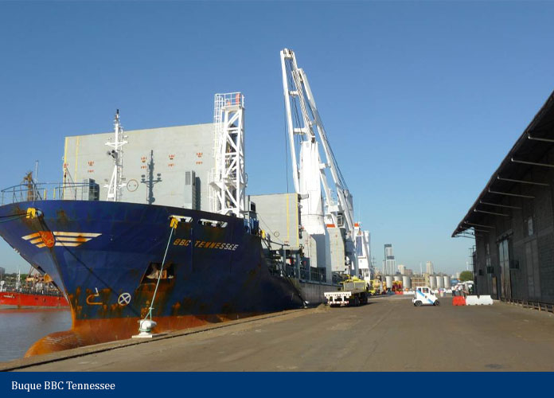
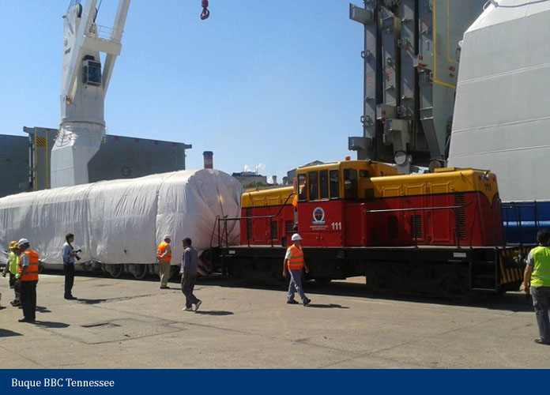
Otras operaciones fueron sucediéndose en forma consecutiva, realizándose todas en forma satisfactoria, con una operación logística a medida de las necesidades de cada tipo de material rodante, sin averías, ni accidentes personales y ahorrando importantes sumas de dinero del Estado nacional en conceptos de almacenaje.
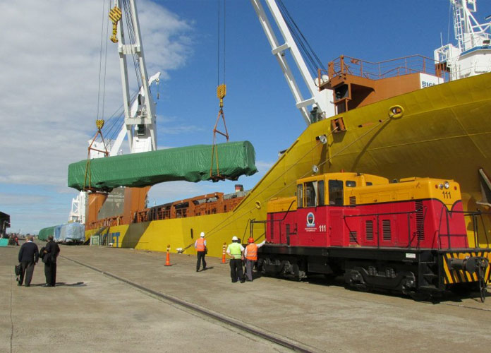
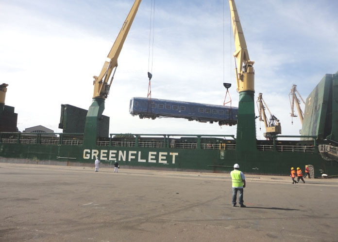
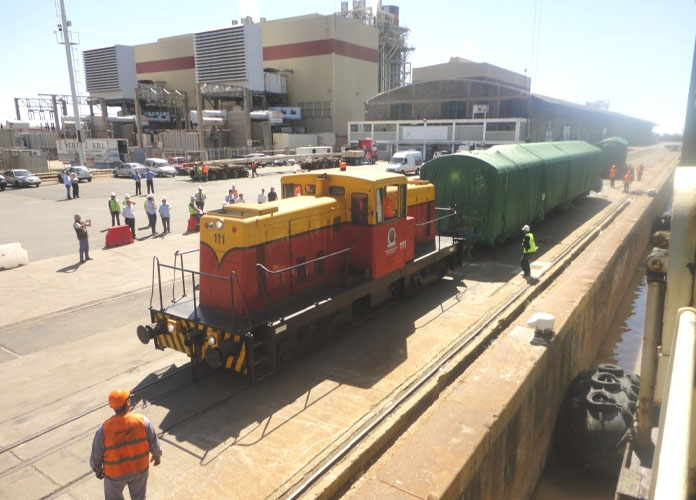
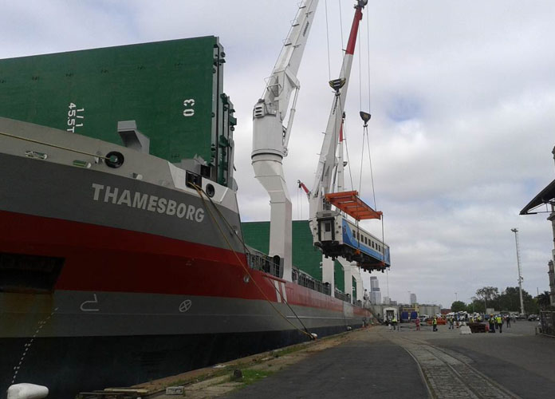
Con la Operación del buque Huanghai Advance, a principio de julio 2014, se descargó el coche de pasajeros número 500.
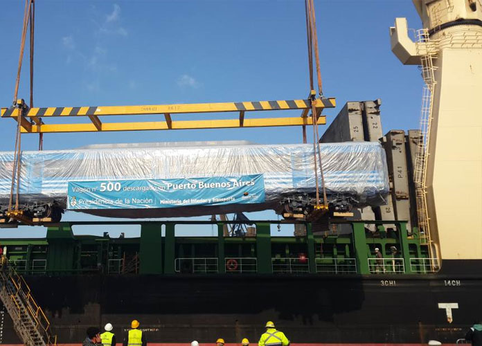
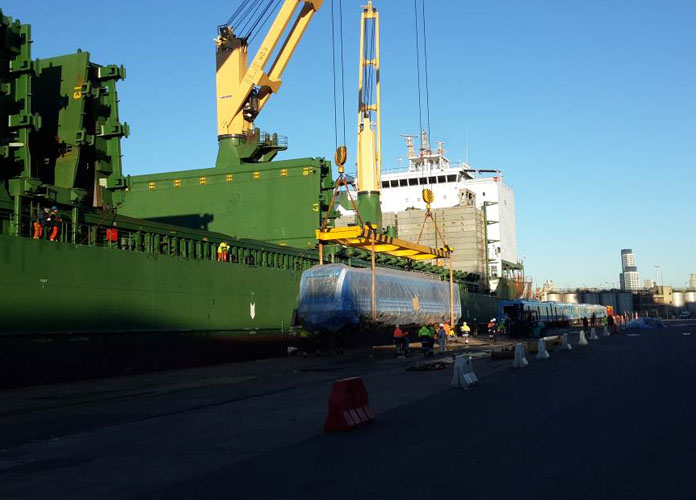
En total, las operaciones de material rodantes en el Darsena E del Puerto Buenos Aires realizadas fueron más de 1110 equipos entre coches y locomotoras, para prácticamente todas las líneas de pasajeros urbanos e interurbanos.
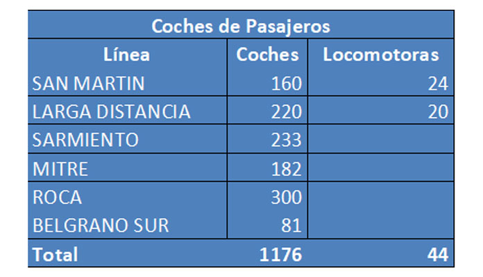
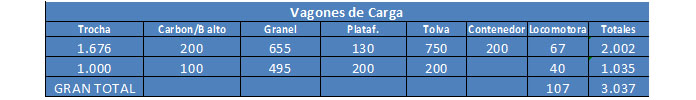
En octubre de 2013, se firma un convenio de Cooperación ADIFSE- AGPSE por el cual se ofrecen servicios de puerto para las operaciones con rieles a cambio del mantenimiento y renovación de vías en el interior de puerto. Con este convenio, se operaron las siguientes cantidades de rieles:
A diferencia de los buques con vagones de pasajeros, los buques con cargas de rieles requieren
de mayor calado disponible para el ingreso, por lo que se realizaron tareas de mantenimiento
y adecuación del dragado de acceso e interior de la dársena E, la cual fue llevada a su calado
de diseño de 10 metros a pie de muelle.
Operaciones con rieles:
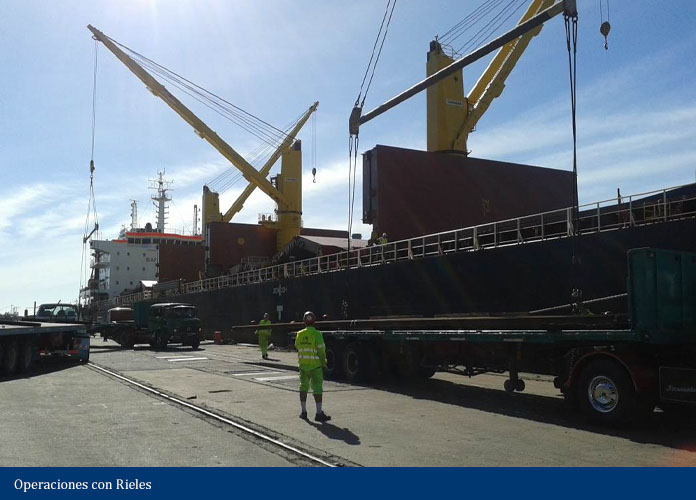
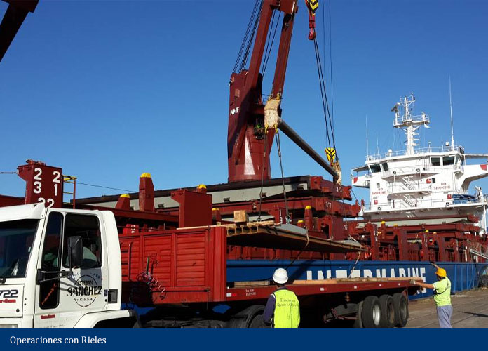
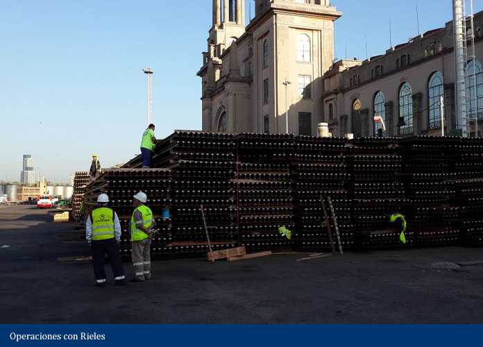
Dentro de los trabajos de rehabilitación de vías, se incluyó la reconexión de la vía sobre el muelle norte, lo que permite contar ahora con 490 metros de vías en condiciones de uso sobre el mismo muelle. Esta reconexión posibilitó la operación de 2 buques en forma simultánea en muelle de Dna E Norte.
Conclusión
La Administración General de Puertos y otros actores externos de la comunidad portuarias y ferroviaria,
fueron protagonistas de un trabajo articulado y mancomunado en harás de un objetivo común, desarrollar
una operación confiable y eficiente de material ferroviario, eslabón fundamental en el objetivo político
del Estado Nacional de modernizar la infraestructura ferroviaria.
Estas capacidades se mantienen intactas, la AGP se encuentra hoy en día al servicio y en condiciones de
prestar todo el apoyo y capacidad de su personal para el objetivo de gestión que el Estado Nacional requiera.
Ricardo FERREYRA>
Capitán de Ultramar con 42 años de experiencia en el negocio marítimo y portuario. Gerente Comercial y de
Operaciones de Terminales Portuarias y Gerente Terminal de Cruceros Buenos Aires. En la actualidad se
desempeña como Gerente de Operaciones de AGPSE